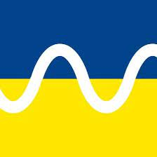
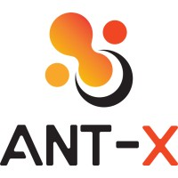

Jianli Gao
Hello! Welcome to my personal academic website!
I am currently a PhD candidate with Control and Power (CAP) Research Group at Imperial College London. I am privileged to work with Dr. Balarko Chaudhuri and Prof. Alessandro Astolfi. My academic research interest lies in control theory and power systems. I am committed to propose analytical control solutions to the long-standing problem of transient stability analysis in large-scale power grids.
Feel free to contact me jianli.gao18@imperial.ac.uk if you share similar interest.
Education
|
Ph.D. in Electrical Engineering
Apr. 2020 - Present Imperial College London, London, U.K. Research topic: Nonlinear Control in Power Systems Supervisors: Dr. Balarko Chaudhuri and Prof. Alessandro Astolfi |
|
|
M.Sc. in Control Systems (Distinction)
Oct. 2018 - Oct. 2019 Imperial College London, London, U.K. Thesis: Vehicle Platoon and String Stability Supervisor: Prof. David Angeli |
|

|
B.Eng. in Electrical and Electronic Engineering (1st Class)
Sep. 2016 - Jun. 2018 University of Manchester, Manchester, U.K. Thesis: Next Generation Mobile Radio Networks - Energy Harvesting Technique Supervisor: Dr. Khairi Hamdi |
|
B.Eng. in Electrical Engineering and Automation
Sep. 2014 - Jul. 2016 North China Electric Power Univerisity, Beijing, China Advisor: Prof. Yafeng Wen |
Experience
|
European Control Conference (ECC22), London, U.K.
July. 2022 Student Volunteer |
|
|  |
Department of EEE at Imperial College, London, U.K.
May 2022 Exam Invigilator |
|  |
ANT-X Drone Control Lab, London, U.K.
Jan. - Apr. 2021 Teaching Assistant |
|
Energy Futures Lab, London, U.K.
Jan. - Mar. 2021 Teaching Assistant |
|
|
State Grid Corporation of China, Hubei, China
Jul. - Sep. 2016 Student Intern |
Honors & Membership
- IEEE CSS Student Membership (Since 2022)